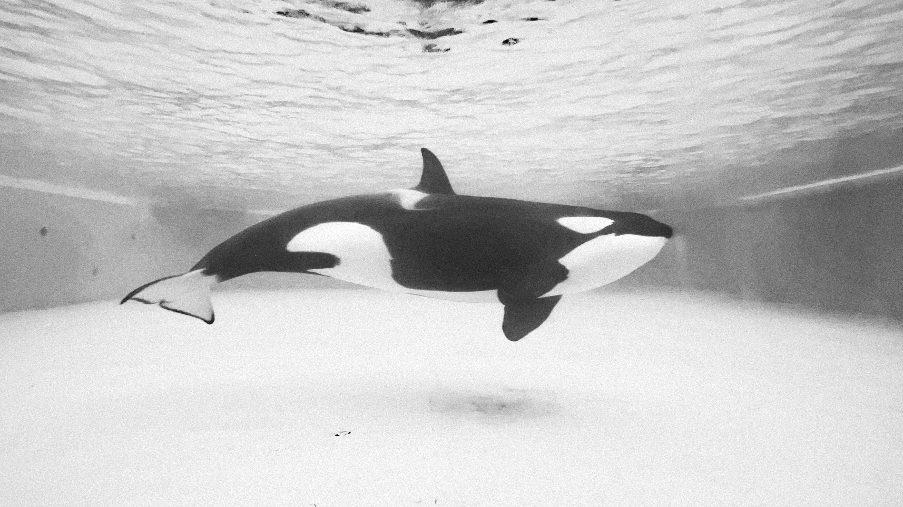
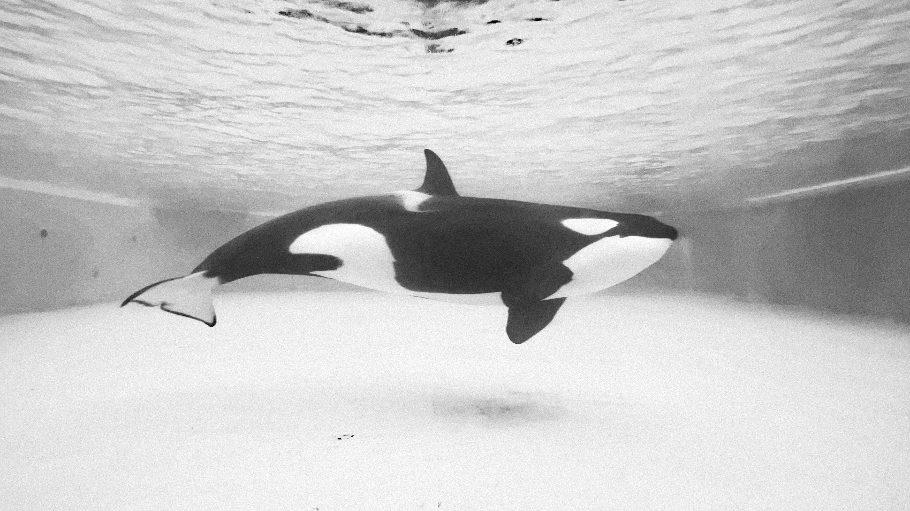
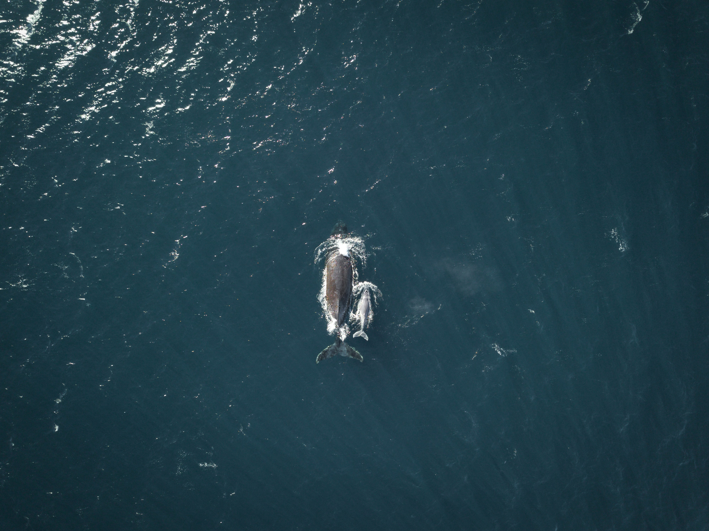
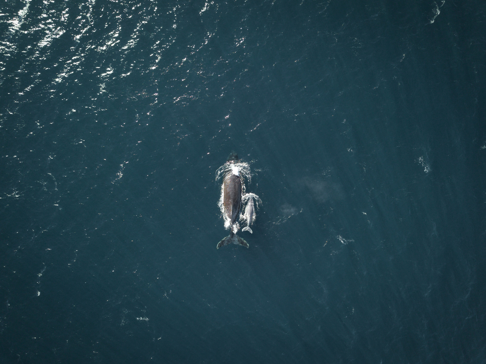

Overview
The killer whale, sometimes referred to as the orca and scientifically named Orcinus orca, is a fascinating marine species that captivates people's attention all around the world. These sentient beings are actually the largest members of the dolphin family, despite their moniker.
Physical Characteristics
With their remarkable black and white coloring, which includes a white underbelly, white patches around their eyes, and a gray saddle patch behind their dorsal fin, orcas are easily recognized. While females are slightly smaller, adult males can reach lengths of up to 32 feet and weights of up to 22,000 pounds.
Habitat and Distribution
Killer whales can be found in every ocean on Earth, including tropical waters and the icy Arctic and Antarctic. They are most frequently observed, meanwhile, in colder waters that are productive.
Behavior and Social Structure
The intricate social structure of killer whales is among their most remarkable features. They reside in close-knit family units known as pods, which can have as many as 40 members. Matriarchs lead these pods, which exhibit complex hunting strategies and vocalizations that are frequently unique to them. These behaviors resemble cultural traditions that have been passed down through the years.
Gallery

 

 

World Count
| Region | Estimated Population |
|---|---|
| North Pacific | 25,000 |
| Antarctic | 70,000 |
| Norwegian Coast | 3,000 |
| North Atlantic | 10,000 |
| Other Regions | Unknown |